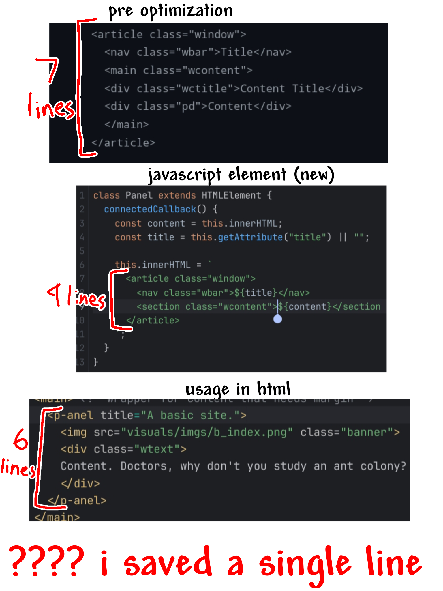

Well, technically it's not a refactor, it's just a weird urge to reconstruct my entire site from scratch. Or maybe it's partially because I used AI very frequently when I was making the previous one, which made me question if I can even code by myself or not.
I actually did attempt some refactoring by putting repetitive elements in web components.. what do you think?

i really don't know how to scale that image properly on desktop
Well, at least this new white theme looks a bit less soulless than the previous one.
It has not even been a month since the first lines for this site was written and of course, it needs a due rework already. All of the repetitive code blocks (like the window panels like this you're seeing that contain these paragraphs) bloat up the .html file and makes debugging infuriating. And everything about the layout is messy too.
I'm currently trying to figure out how to make a custom component for it and so far it's a bit annoying. But it most likely get worse because I have to remake all of my pages with new and optimized code. I literally set myself up for damnation for lacking an intellectual prowess in markup.
I also had ideas to write all the elements from scratch because I feel guilty having most of my site be made by AI (read below) but that will be EVEN MORE of a pain in the ass. Though I might be up for it. I yearn for optimization.
Also, Merry Christmas I guess.
At this time of writing, that is the case for some reason. I always say I have "divine intellect" and is "the best programmer on Earth, chosen by God". Fortunately I was joking, because the code in this site proves that I do not have an intellectual prowess. All of the positioning fuckups got fixed by ChatGPT. I owe the largest apology you can demand.
Hell, I didn't even learn HTML/CSS by regular lessons. I mashed random buttons and asked AI occasionally all the time. As a result, I know nothing. I feel bad because of it because I'm pouring in 0 effort when I do, especially when I was making this website.